先判断：你缺的是哪一环
先看交付：客户要 RAW 吗？要 HDR 吗？要进多机位时码吗？三个都否，电影机大概率是过度配置。只要 Log、10-bit、可换镜头，一台高端视频机加外录已经够。电影机的优势是宽容度、时码、SDI、可维修的套件生态，不是“看起来专业”。
适合：
- 广告/短片，需要 RAW 或高宽容度
- 多机位，需要时码与 SDI
- 需要套件化、可维修的长期系统
不适合：
- 只拍活动/访谈，交付 Rec.709
- 单人移动拍摄，怕重
- 预算只够机身，没有套件钱
测试口径：可复现，不写假跑分
不要只看宽容度数字。带一张高光窗景、一张暗部人脸，用项目要用的编码各拍 30 秒，回放看高光是否可回收、暗部噪点是否可接受、套件是否平衡。
| 检查项 | 通过线 | 参考/记录 |
|---|---|---|
| 高光 | 窗外可回收 2 档，不出现硬切 | Log/RAW 实拍 |
| 暗部 | ISO 测试下肤色噪点可接受 | 双原生 ISO 对比 |
| 时码 | 输入/输出与录机一致 | 时码发生器 |
| 介质 | 项目编码持续写入不丢帧 | 满卡测试 |
| 套件 | 肩扛/手提 10 分钟不失衡 | 实际配重 |
DIAGRAM / CINEMA
电影机五项交付检查

价格带：先看总拥有成本
不只看标价，还要看卡、电池、转接、云台、灯架、软件订阅和维修。以下按“能完成一类真实项目”的最低配置分档，不是入门玩具价。
| 档位 | 参考价 | 包含 | 注意 |
|---|---|---|---|
| 入门 | 15,000–35,000 | 机身 + 1 卡 + 基础套件 | 监看/电量常被低估 |
| 主力 | 35,000–80,000 | 机身 + 双卡 + 监看 + 电池 + 提手 | 线材与底座另算 |
| 进阶 | 80,000–200,000 | RAW 录机、时码、无线跟焦、专业套件 | 重量与团队成本上升 |
价格为 2026 年 11 月中国大陆渠道参考，含税与否以实际报价为准；不构成购买建议。
替代与升级：别在错误的轴上加钱
- 高端视频机 + 外录
- 上一代电影机二手
- 租机身，买镜头/套件
购买执行：带片子去，不带参数去
下单前按顺序做一遍；任何一步失败，都不要用“后期能修”说服自己。
- 按项目编码拍 30 秒并回放
- 把套件装好，称一次重量
- 确认卡价与持续写入
- 确认监看、供电、线材接口
- 查维修点与备机方案
图片说明：本页封面、图解与步骤图是编辑示意或结构图，不是本页实测照片，也不能当作器材测试证据；AI 辅助生成的图会在图注标出。判断器材或画面，以正文的测试条件与现场记录为准。